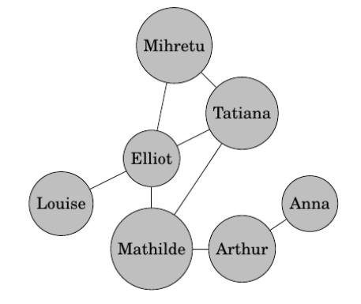

En reprenant l'exercice précédent, compléter le tableau suivant, mettre une croix ou 1 pour signifier une amitié, et rien ou 0 pour signifier une absence d'amitié.
| Cléo | Mathias | Léane | Léopold | Carla | Stella | Maxime | Charles | |
|---|---|---|---|---|---|---|---|---|
| Cléo | ||||||||
| Mathias | ||||||||
| Léane | ||||||||
| Léopold | ||||||||
| Carla | ||||||||
| Stella | ||||||||
| Maxime | ||||||||
| Charles |
Graphe
Pour vous aidez, vous pouvez consulter le cours suivant:
Réseaux sociaux et graphes
Toutes les notions demandées dans les exercices suivants sont reprises dans le liens.
Exercice - Distance entre 2 sommets
La distance entre deux sommets est le nombre minimum d’arêtes qu’il faut parcourir pour aller d’un des deux sommets à
l’autre.
Refaire le tableau précédent et le remplir avec la distance entre chacun des sommets du graphe.
Exercice – Écartement / Excentricité d’un sommet
L’écartement ou excentricité d’un sommet est la distance maximale entre ce sommet et les autres sommets du graphe.
Refaire et remplir le tableau suivant:
| Sommet | Cléo | Mathias | Léane | Léopold | Carla | Stella | Maxime | Charles |
|---|---|---|---|---|---|---|---|---|
| Ecartement |
Exercice - Diamètre du graphe
Le diamètre d’un graphe est la distance maximale entre deux sommets de ce graphe.
Quel est le diamètre du graphe précédent ?
Exercice - Centre d’un graphe
On appelle centre d'un graphe, le sommet d'excentricité minimale (le centre n'est pas nécessairement unique).
Déterminer le centre du graphe précédent.
Que peut-on dire des personnes occupant le centre d’un graphe ?
Exercice - Rayon d’un graphe
Le rayon d’un graphe est l’écartement d’un des sommets du centre du graphe.
Déterminer le rayon du graphe précédent.
Les cinq exercices précédents permettent d’introduire un peu de vocabulaire sur les graphes permettant de caractériser plus formellement des notions comme influenceurs (centre du graphe) et donner un formalisme à l’expérience de Milgram (diamètre du graphe).
Exercice - Autres graphes
Déterminer le rayon, le diamètre et le centre des graphes suivants:
| Graphe 1 | Graphe 2 |
|---|---|
|  |  |
Exercice - Et Twitter et Instagram ?
Comment pourrait-on modifier les graphes pour permettre de représenter le graphe des relations de Twitter ou Instagram ?
Commentaires:
On revient ici sur le caractère symétrique de l’amitié (symétrie prônée par Facebook notamment). Cette symétrie n’existe
pas sur Twitter ou Instagram : on suit quelqu’un sans nécessairement réciprocité. La représentation sous forme de tableau
à double entrée perd ainsi sa symétrie par rapport à la diagonale et les graphes deviennent des graphes orientés.
Exercice - Milgram et les réseaux sociaux
- Indiquer combien de sommets possède le graphe des relations de Facebook, d’Instagram, de Twitter.
- Énoncer la conjecture de l’expérience de Milgram avec les notions vues dans le cours.